파일 업로드
FILE · 문서 · 이미지를 CRF 에 첨부하는 입력란
파일 업로드 필드란
- 1.1필드 추가와 속성 패널 구성
1.1필드 추가와 속성 패널 구성
개요
파일 업로드(FILE) 는 검사 결과지 · 동의서 사본처럼 문서나 이미지를 그대로 첨부하는 입력란입니다. 추가하면 캔버스에 점선 영역이 표시되고 허용 형식과 크기 제한이 안내로 나타납니다. 저장되는 것은 파일 자체가 아니라 첨부한 파일의 목록이며, 파일 실체는 별도 보관소에 보관됩니다.
화면 설명
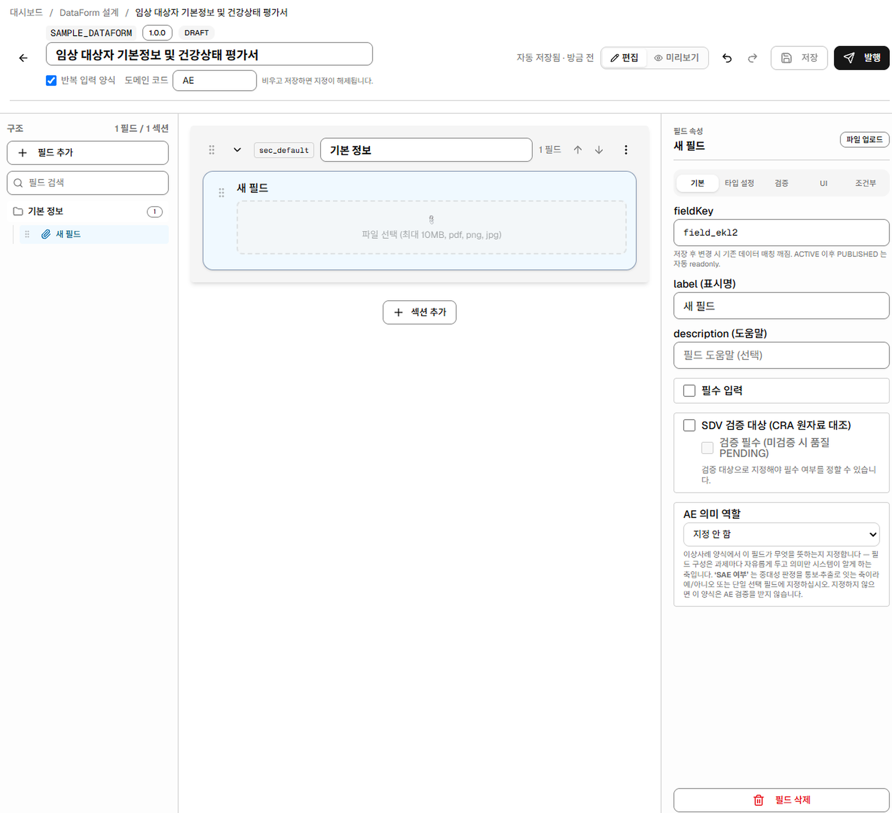
[+ 필드 추가] — 여기에서 타입을 지정하면 필드가 생성됩니다.
구조 트리에 새 필드가 추가됩니다. 아이콘이 클립 모양입니다.
WYSIWYG 캔버스에 점선 첨부 영역이 표시되고, 그 안에 “파일 선택 (최대 10MB, pdf, png, jpg)” 안내가 보입니다. 설정하지 않았는데도 제한이 적혀 있습니다 — 생성 시 기본 제약이 들어가기 때문입니다. 3.1
fieldKey — 값이 저장되는 실제 키입니다. 2.1
label (표시명) · description (도움말) — 화면에 표시되는 이름과 보조 설명입니다. 2.1
필수 입력 · SDV 검증 대상 — 2.2 · 2.3 에서 다룹니다.
AE 의미 역할 — 이상사례 양식에서 필드의 의미를 지정하는 항목입니다. 화면 안내가 밝히듯 예/아니오 또는 단일 선택 필드가 지정 대상이므로 이 타입에서는 지정하지 않습니다.
타입 배지 「파일 업로드」 — 선택한 필드의 타입입니다. 추가한 뒤에는 변경할 수 없습니다.
속성 탭 5종 — 기본 · 타입 설정 · 검증 · UI · 조건부. 이 매뉴얼 2~6장이 각 탭에 대응합니다.
「미측정 선언 허용」 항목이 없습니다. 다른 타입에는 AE 의미 역할 아래에 있지만, 이 타입은 시스템이 미측정 선언을 지원하지 않습니다. 첨부가 없으면 그냥 비어 있는 것으로 기록됩니다. (※ 7.2)
유의사항
필수 확인 데이터 손상 · 폼 완료 불가
- • ⛔ 파일 안에 피험자 식별정보가 들어가지 않도록 하십시오. 검사 결과지 · 판독지에는 이름 · 등록번호 · 생년월일이 인쇄되어 있는 경우가 많습니다. 가린 뒤 첨부하도록 도움말2.1과 helpText5.4에 반드시 적어 두십시오 — 시스템이 파일 내용을 검사해 주지는 않습니다.
- • 타입은 추가한 뒤에 변경할 수 없고, 발행(PUBLISH) 이후에는 구조 자체를 변경할 수 없습니다. 잘못 선택했다면 필드를 삭제하고 다시 추가하십시오.
오해하기 쉬운 동작
- • 저장되는 것은 첨부한 파일의 목록입니다. 파일 실체는 별도 보관소에 두고 이 필드에는 어떤 파일이 붙어 있는지만 기록됩니다. 따라서 데이터 추출 결과에도 파일 자체가 아니라 그 목록이 나옵니다.
기본 탭 — 이름 · 필수 · 검증 대상
- 2.1fieldKey · 표시명 · 도움말
- 2.2필수 입력
- 2.3SDV 검증 대상 (CRA 원자료 대조)
2.1fieldKey · 표시명 · 도움말
개요
필드의 이름을 정하는 영역입니다. 저장 키(fieldKey)와 화면에 표시되는 이름(label)은 서로 다른 값이며, 변경해도 되는 시점이 다릅니다. 파일 업로드는 무엇을 첨부해야 하는지를 말로 설명해 주지 않으면 기록자가 알 수 없으므로 도움말이 특히 중요합니다.
화면 설명
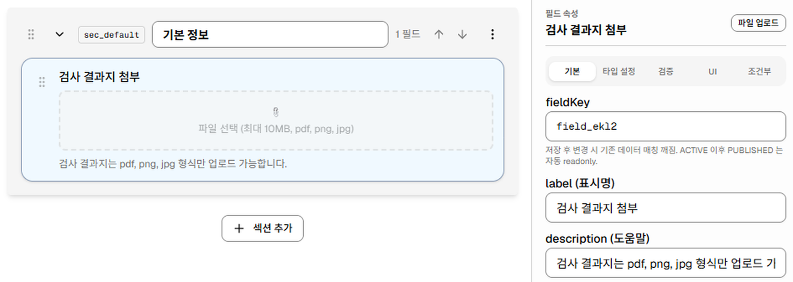
label (표시명) — 입력 화면에 표시할 항목 이름을 입력합니다.
캔버스 첨부 영역 위 제목으로 표시됩니다.
description (도움말) — 표시명 아래에 표시할 보조 설명을 입력합니다. 공란으로 두면 표시되지 않습니다.
첨부 영역 아래에 표시됩니다. 캡처는 “검사 결과지는 pdf, png, jpg 형식만 업로드 가능합니다.” 입니다.
fieldKey — 값이 저장되는 실제 키입니다. 필드를 추가하면 field_ekl2 처럼 자동으로 부여되며, 화면 안내와 같이 “저장 후 변경 시 기존 데이터 매칭 깨짐” 입니다.
유의사항
필수 확인 데이터 손상 · 폼 완료 불가
- • 무엇을 첨부해야 하는지 도움말에 적으십시오. 「검사 결과지 첨부」 만으로는 어느 검사의 결과지인지, 원본인지 사본인지 알 수 없습니다. 첨부 대상을 구체적으로 적어 두면 되돌려 받는 일이 줄어듭니다.
- • 허용 형식을 도움말에도 적어 두면 좋습니다. 캡처처럼 적어 두면 기록자가 첨부 전에 확인할 수 있습니다 — 다만 형식을 실제로 제한하는 것은 타입 설정 탭입니다. 두 곳의 내용이 어긋나지 않게 하십시오. 3.2
- • fieldKey 는 저장한 뒤에 변경하지 마십시오. 이미 첨부된 파일과의 연결이 끊어지고, 이 필드를 참조하던 검증 규칙4.3과 조건부 표시6장도 함께 깨집니다.
오해하기 쉬운 동작
- • 표시명(label)은 언제든 변경할 수 있습니다. 저장된 값에는 영향을 주지 않습니다.
2.2필수 입력
개요
이 필드를 반드시 첨부해야 폼을 완료할 수 있게 할지 정합니다. 필수로 지정하면 파일이 하나도 없는 상태가 미입력으로 집계됩니다. 현장에서 원본을 당장 구하지 못하는 경우가 있으므로, 지정 전에 첨부가 늦어질 때 어떻게 할지를 함께 정해 두십시오.
화면 설명
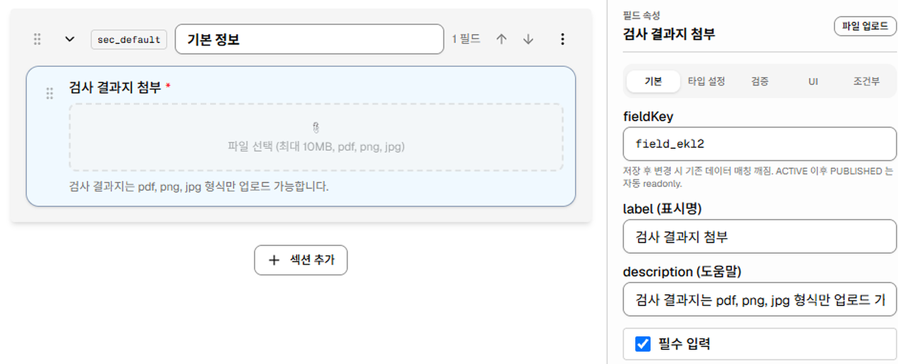
* 가 표시된다필수 입력 — 선택하면 이 필드가 필수 항목이 됩니다.
캔버스 표시명 오른쪽에 빨간 * 가 표시됩니다.
label · description — 2.1 에서 입력한 값이 그대로 표시됩니다.
유의사항
필수 확인 데이터 손상 · 폼 완료 불가
- • ⛔ 이 타입에는 “미측정” 을 선언할 방법이 없습니다. 다른 타입은 확인 불가를 값으로 남길 수 있지만, 파일 업로드는 그 기능이 지원되지 않습니다. 원본을 끝내 구하지 못하는 경우가 예상된다면 필수로 지정하지 말고, 사유를 적을 별도의 텍스트 필드를 함께 두십시오. (※ 7.2)
- • 숨겨진 필드는 필수 검사에서 제외됩니다. 조건부 표시6장로 감춰진 동안에는 필수여도 첨부 없이 폼이 완료됩니다.
오해하기 쉬운 동작
- • “파일이 하나라도 있으면” 충족입니다. 몇 개를 첨부해야 하는지는 필수 설정으로 정할 수 없습니다 — 필요한 장수는 도움말에 적으십시오. 2.1 · 3.3
- • 잘못 올린 파일은 삭제할 수 있습니다. 다만 삭제 이력도 기록에 남습니다.
2.3SDV 검증 대상 (CRA 원자료 대조)
개요
SDV(Source Data Verification) 는 임상연구모니터요원(CRA)이 입력값을 의료기관 원자료와 대조하는 절차입니다. 이 필드를 그 대상으로 지정할지 여기에서 정합니다. 이 설정은 모든 필드 타입에서 동일하므로 화면도 타입과 무관하게 같습니다.
화면 설명

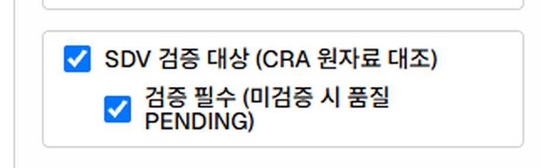
SDV 검증 대상 (CRA 원자료 대조) — 선택하면 이 필드가 CRA 의 대조 목록에 포함됩니다.
선택 상태로 바뀌면서 하위 항목이 활성화됩니다.
검증 필수 (미검증 시 품질 PENDING) — ①을 선택한 뒤에야 지정할 수 있습니다. 선택하면 CRA 가 대조를 마치기 전까지 해당 데이터의 품질 상태가 PENDING 에 머무릅니다.
①을 선택하기 전에는 ②가 흐리게 비활성입니다. 화면 안내와 같이 “검증 대상으로 지정해야 필수 여부를 정할 수 있습니다.”
유의사항
필수 확인 데이터 손상 · 폼 완료 불가
- • 파일을 교체하거나 추가하면 검증이 해제됩니다. 품질 상태가 PENDING 으로 되돌아가고 CRA 가 다시 대조해야 합니다.
오해하기 쉬운 동작
- • 첨부 파일 자체가 원자료인 경우가 많습니다. 검사 결과지를 그대로 올렸다면 CRA 가 대조할 대상이 이미 화면에 있는 셈이므로, 무엇과 무엇을 대조할지를 도움말에 분명히 적어 두십시오. 2.1
- • SDV 는 입력한 사람이 직접 수행할 수 없습니다. 시스템이 교차 검증(Cross-User SoD)을 강제하므로 입력자와 검증자는 반드시 달라야 합니다.
참고
- • 품질 상태는 PENDING → VERIFIED → CLEAN 순으로 진행됩니다. 검증 필수로 지정한 필드가 하나라도 미검증이면 해당 데이터는 CLEAN 이 되지 못합니다.
타입 설정 탭 — 허용 형식 · 크기 · 개수
- 3.1타입 설정 탭 전체 구성
- 3.2allowedTypes · maxSizeMB
- 3.3다중 업로드 (multiple)
3.1전체 구성
개요
파일 업로드의 타입 설정은 세 칸입니다 — 어떤 형식을3.2 · 얼마나 큰 파일까지3.2 · 몇 개나3.3 받을지 정합니다. 다른 타입과 달리 처음부터 두 칸에 값이 들어가 있습니다 — 필드를 만들 때 기본 제약이 함께 지정되기 때문입니다.
화면 설명
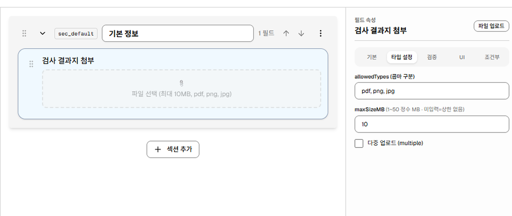
allowedTypes (콤마 구분) — 허용할 파일 확장자입니다. 처음에는 pdf, png, jpg 가 들어가 있습니다. 3.2
maxSizeMB — 파일 한 개의 최대 크기입니다. 처음에는 10 이 들어가 있습니다. 화면 안내와 같이 “(1~50 정수 MB · 미입력=상한 없음)” 입니다. 3.2
①~②가 캔버스 첨부 영역 안내에 그대로 반영되어 “파일 선택 (최대 10MB, pdf, png, jpg)” 로 표시됩니다.
다중 업로드 (multiple) — 여러 개를 첨부할 수 있게 할지 정합니다. 처음에는 꺼져 있어 한 개만 첨부할 수 있습니다. 3.3
타입 배지 「파일 업로드」 — 설정 중인 필드의 타입입니다.
속성 탭 — 현재 타입 설정 탭입니다.
유의사항
필수 확인 데이터 손상 · 폼 완료 불가
- • 두 칸의 값은 안내 문구가 아니라 실제로 적용된 제약입니다. 다른 타입은 흐린 글씨가 예시일 뿐이지만, 이 타입은 필드를 만드는 순간 지정된 값입니다 — 그대로 두면 pdf · png · jpg 10MB 로 운영됩니다. 과제에 맞는지 반드시 확인하십시오.
- • 두 칸을 비우면 제한이 사라집니다. allowedTypes 를 비우면 모든 형식이, maxSizeMB 를 비우면 크기 상한이 없어집니다(서버가 허용하는 한도까지). 제한을 없애는 것이 의도가 아니라면 비우지 마십시오. 3.2
오해하기 쉬운 동작
- • 기본값(defaultValue) 항목이 없습니다. 파일은 미리 채워 둘 수 없으므로 이 타입에는 해당 설정이 존재하지 않습니다.
참고
- • 자동 계산 항목도 없습니다. 수식으로 파일을 만들어 낼 수는 없기 때문입니다.
3.2allowedTypes · maxSizeMB
개요
어떤 형식을 얼마나 큰 크기까지 받을지 정합니다. 두 칸 모두 기록자가 파일을 고르는 순간 검사되므로, 맞지 않는 파일은 첨부 자체가 거부됩니다. 제한을 좁혀 두면 잘못된 파일이 올라오는 일을 미리 막을 수 있습니다.
화면 설명
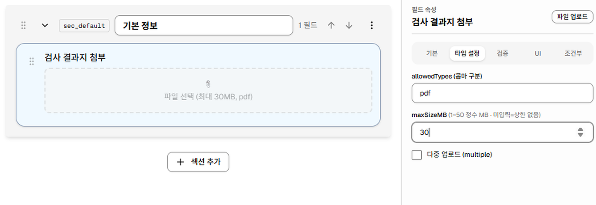
pdf · 30 으로 바꾸면 첨부 영역 안내가 즉시 따라 바뀐다allowedTypes (콤마 구분) — 허용할 확장자를 콤마로 구분해 입력합니다. 캡처는 pdf 하나만 남겼습니다. 점(.) 없이 확장자만 적습니다.
maxSizeMB — 파일 한 개의 최대 크기(MB)입니다. 캡처는 30 입니다. 1~50 사이의 정수만 지정할 수 있으며, 벗어난 값은 자동으로 보정됩니다.
①~②의 결과 — 첨부 영역 안내가 “파일 선택 (최대 30MB, pdf)” 로 바뀝니다.
다중 업로드 (multiple) — 3.3 에서 다룹니다.
유의사항
필수 확인 데이터 손상 · 폼 완료 불가
- • ⛔ 발행한 뒤에 제한을 좁히면 이미 올라간 파일은 그대로 남습니다. 새 첨부만 막힐 뿐 기존 파일이 지워지거나 경고가 표시되지는 않습니다 — 운영 중 좁히기 전에 이미 첨부된 파일을 먼저 확인하십시오.
- • ⛔ 크기 상한은 50MB 를 넘을 수 없습니다. 더 큰 값을 입력해도 50 으로 보정되며, 이는 시스템 전체의 상한입니다. 큰 영상 자료는 이 필드가 아니라 별도 전송 절차를 사용하십시오.
오해하기 쉬운 동작
- • 확장자만으로는 내용을 보장하지 못합니다. 이름을
.pdf로 바꾼 다른 파일도 통과할 수 있습니다 — 내용 확인은 SDV 단계에서 사람이 수행합니다. 2.3
참고
- • 확장자는 콤마로 구분하고 점은 넣지 않습니다.
pdf, jpg와 같이 적습니다.
3.3다중 업로드 (multiple)
개요
파일을 한 개만 받을지 여러 개 받을지 정합니다. 꺼 두면 한 개만 첨부할 수 있고 새 파일이 기존 파일을 교체합니다. 켜면 여러 개를 쌓아 올릴 수 있습니다 — 여러 장으로 나뉜 결과지나 여러 각도로 찍은 사진처럼 묶음으로 받아야 하는 자료에 사용합니다.
화면 설명
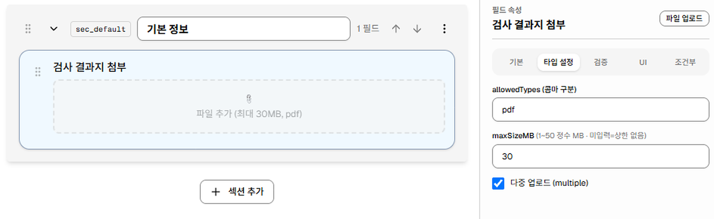
다중 업로드 (multiple) — 선택하면 파일을 여러 개 첨부할 수 있습니다.
첨부 영역 안내가 “파일 추가 (최대 30MB, pdf)” 로 바뀝니다. 꺼져 있을 때의 “파일 선택” 과 이 한 낱말만 다릅니다.
allowedTypes · maxSizeMB — 3.2 에서 설정한 값입니다. 크기 제한은 파일 한 개당 적용되며, 개수와는 무관합니다.
유의사항
필수 확인 데이터 손상 · 폼 완료 불가
- • ⛔ 꺼 두면 새 파일이 기존 파일을 교체합니다. 기록자가 추가하려는 의도로 다시 첨부하면 앞서 올린 파일이 대체됩니다 — 여러 장을 받아야 한다면 반드시 켜 두십시오.
- • ⛔ 최대 개수는 지정할 수 없습니다. 켜면 제한 없이 쌓이므로, 필요한 장수는 도움말과 helpText 에 적어 안내하십시오. 2.1 · 5.4
- • 켜 두었다가 끄는 것은 신중히 하십시오. 이미 여러 개가 첨부된 필드에서 다중을 끄면 이후 첨부가 교체 방식으로 바뀌어 혼선이 생깁니다.
오해하기 쉬운 동작
- • 크기 제한은 파일 한 개 기준입니다. 30MB 로 두고 다중을 켜면 30MB 짜리 여러 개가 올라올 수 있습니다. 3.2
검증 탭 — 저장 전 값 검사
- 4.1검증 규칙이 없는 상태
- 4.2규칙 추가
- 4.3규칙 작성 완료 — 다른 필드와 비교
4.1검증 규칙이 없는 상태
개요
저장하기 전에 값이 조건에 맞는지 검사하는 규칙을 모아 두는 탭입니다. 파일 업로드는 형식과 크기를 타입 설정 탭에서 이미 막고 있어 이 탭에서 따로 검사할 것이 거의 없습니다 — 다른 필드와의 관계를 검사할 때만 사용합니다. 4.3
화면 설명
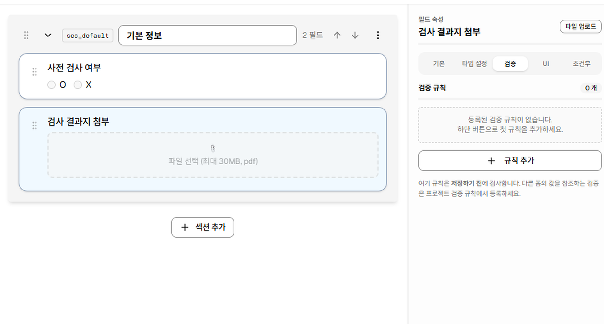
[+ 규칙 추가] — 첫 규칙을 생성합니다. 선택한 뒤의 화면은 4.2 에서 설명합니다.
검증 규칙 영역과 등록된 규칙 수입니다. 처음에는 0 개 입니다.
규칙이 없으면 “등록된 검증 규칙이 없습니다. 하단 버튼으로 첫 규칙을 추가하세요.” 안내가 표시됩니다.
하단 안내 — “여기 규칙은 저장하기 전에 검사합니다. 다른 폼의 값을 참조하는 검증은 프로젝트 검증 규칙에서 등록하세요.”
유의사항
필수 확인 데이터 손상 · 폼 완료 불가
- • ⛔ 다른 폼의 값을 참조하는 검증은 여기서 만들 수 없습니다. 그런 규칙은 「프로젝트 검증 규칙」 화면에서 등록하십시오.
- • 검증 탭은 타입에 따라 막히지 않습니다. 파일에 맞지 않는 규칙도 고를 수 있으므로 고른 규칙이 이 타입에 성립하는지 직접 확인해야 합니다. 4.2
오해하기 쉬운 동작
- • 형식 · 크기 제한은 여기가 아니라 타입 설정 탭입니다. 이미 그곳에서 첨부 자체를 막으므로 같은 내용을 규칙으로 중복해 만들 필요가 없습니다. 3.2
- • 캡처에는 필드가 둘입니다. 「사전 검사 여부」(단일 선택) 와 「검사 결과지 첨부」 — 앞 필드의 답에 따라 첨부 가부가 갈리는 관계라, 4.3 에서 두 필드를 묶는 규칙을 만듭니다.
4.2규칙 추가
개요
4.1 의 [+ 규칙 추가] 를 선택하면 규칙 1 블록이 생성됩니다. 처음에는 「값 범위」 가 잡혀 있는데, 파일에는 크고 작음이 없어 성립하지 않습니다 — 「다른 필드와 비교」 로 바꾸어야 합니다. 4.3
화면 설명
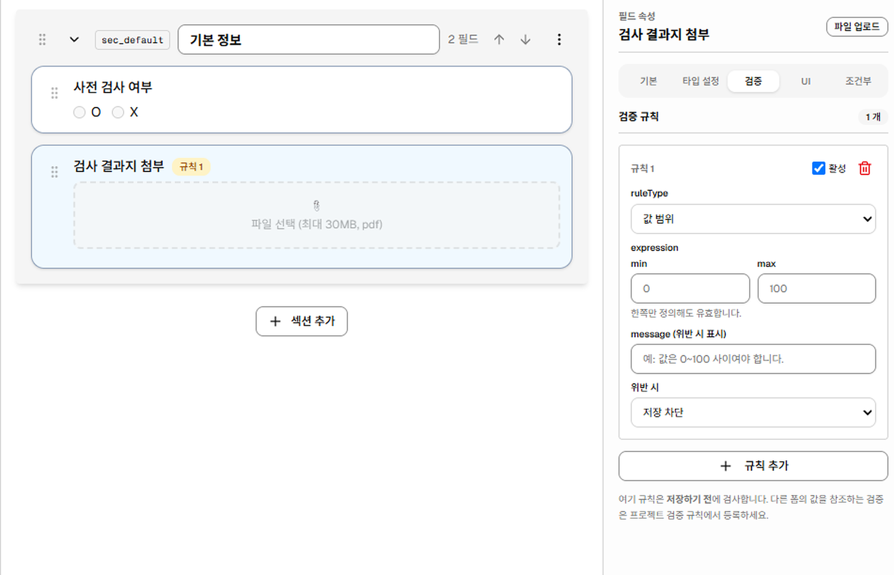
[+ 규칙 추가] — 규칙을 하나 더 생성합니다. (4.1 에서 선택한 것과 같은 버튼입니다.)
캔버스 표시명 옆에 「규칙 1」 배지가 표시됩니다.
규칙 수가 1 개 로 변경됩니다.
활성 체크박스와 삭제 아이콘 — 규칙을 지우지 않고 잠시 중단할 수 있습니다.
ruleType — 규칙의 종류입니다. 생성 직후에는 「값 범위」 이므로 「다른 필드와 비교」 로 변경하십시오.
min — 값 범위를 골랐을 때 나타나는 하한 칸입니다.
max — 같은 조건에서 나타나는 상한 칸입니다.
message (위반 시 표시) — 규칙을 위반했을 때 사용자에게 표시할 문구입니다.
위반 시 — 저장 차단 또는 경고 중에서 선택합니다. (ruleType 에 따라 고를 수 없게 되기도 합니다 — 4.3)
흐린 글씨 0 · 100 과 “한쪽만 정의해도 유효합니다.” 는 값 범위에 대한 안내이며 설정된 값이 아닙니다.
유의사항
필수 확인 데이터 손상 · 폼 완료 불가
- • ⛔ 「값 범위」 를 파일 개수나 크기로 오해하지 마십시오. 이 규칙은 숫자 값을 검사하는 것이라 파일 업로드에서는 아무것도 막지 못합니다. 크기 제한은 maxSizeMB3.2, 개수는 다중 업로드3.3 가 담당합니다.
- • ⛔ 「형식 (정규식)」 도 사용하지 마십시오. 허용 확장자는 allowedTypes 가 담당합니다. 정규식을 걸면 정상적으로 첨부한 파일이 거부될 수 있습니다. 3.2
- • message 를 공란으로 두면 사용자는 차단된 이유를 알 수 없습니다. 반드시 입력하십시오.
오해하기 쉬운 동작
- • 이 타입에서 쓸모 있는 것은 「다른 필드와 비교」 입니다. “앞 질문에 특정 답을 했을 때만 첨부할 수 있다” 같은 관계를 검사합니다. 4.3
4.3규칙 작성 완료 — 다른 필드와 비교
개요
ruleType 을 다른 필드와 비교 로 바꾸면 같은 폼의 다른 필드 값과 견주어 검사합니다. 파일 업로드에서 실제로 쓸 수 있는 유일한 규칙 종류이며, 앞 질문의 답에 따라 첨부 가부가 갈리는 관계를 표현할 수 있습니다.
화면 설명
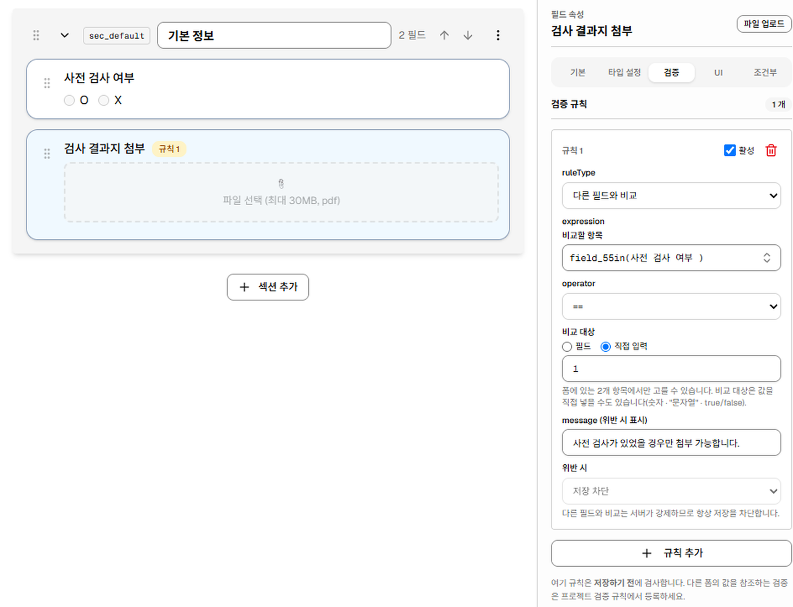
1 일 때만 저장되도록 설정한 상태ruleType = 다른 필드와 비교 — 선택하면 아래 칸이 비교용으로 바뀝니다.
비교할 항목 — 같은 폼의 다른 필드를 선택합니다. 캡처는 field_55in(사전 검사 여부) 로, 단일 선택 필드입니다.
operator — 비교 방법입니다. 캡처는 ==(같음) 입니다.
비교 대상 — 필드 와 직접 입력 중에서 선택합니다. 캡처는 직접 입력으로 1 을 넣었습니다 — 「사전 검사 여부」 의 저장값 입니다.
message (위반 시 표시) — 캡처는 사전 검사가 있었을 경우만 첨부 가능합니다. 입니다.
위반 시 — 회색으로 비활성입니다. 화면 안내와 같이 “다른 필드와 비교는 서버가 강제하므로 항상 저장을 차단합니다.” — 이 규칙에서는 경고를 고를 수 없고 저장 차단으로 고정됩니다.
화면 안내 — “폼에 있는 2개 항목에서만 고를 수 있습니다. 비교 대상은 값을 직접 넣을 수도 있습니다(숫자 · "문자열" · true/false).”
유의사항
필수 확인 데이터 손상 · 폼 완료 불가
- • ⛔ 비교 대상에는 화면에 보이는 문구가 아니라 저장값을 넣습니다. 캡처의 「사전 검사 여부」 는 화면에
O·X로 보이지만 저장값은1입니다. 참조할 필드의 선택지 목록에서 저장값을 먼저 확인하십시오. - • ⛔ 조건의 방향을 발행 전에 확인하십시오. 검증 규칙은 만족해야 하는 조건으로 적습니다. 설정한 뒤 미리보기에서 실제 동작을 확인하십시오.
오해하기 쉬운 동작
- • 이 규칙은 경고로 둘 수 없습니다. 위반 시가 저장 차단으로 고정되므로, 반드시 막아야 하는 관계에만 사용하십시오.
- • 첨부가 하나도 없으면 규칙은 검사되지 않습니다. 빈 상태는 검사 대상이 아니며, 미첨부를 막는 것은 필수 입력2.2의 몫입니다.
UI 탭 — 화면 배치와 안내 문구
- 5.1UI 탭 전체 구성
- 5.2레이아웃 너비
- 5.3읽기 전용 · 숨김
- 5.4helpText (도움말)
5.1전체 구성
개요
값 자체가 아니라 화면에 어떻게 배치하고 어떻게 안내할지를 정하는 탭입니다. 이 탭의 설정은 저장되는 데이터 자체를 변경하지 않습니다. 다만 숨김은 화면에서만 감추고 첨부된 파일은 그대로 남으므로 사용 전에 5.3 을 확인하십시오.
화면 설명
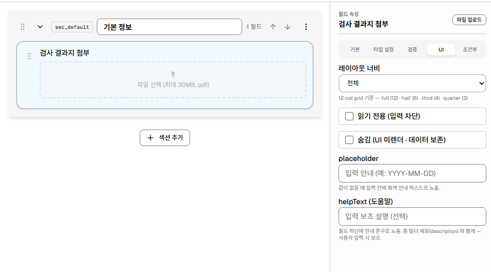
레이아웃 너비 — 폼 한 줄에서 이 필드가 차지할 폭입니다. 5.2
읽기 전용 (입력 차단) — 보여 주되 첨부 · 삭제를 막습니다. 5.3
숨김 (UI 미렌더 · 데이터 보존) — 화면에서 감춥니다. 5.3
helpText (도움말) — 첨부 영역 아래에 표시할 안내 문구입니다. 5.4
placeholder — 항목은 표시되지만 이 타입에서는 적용되지 않습니다. 첨부 영역의 안내 문구는 타입 설정 탭의 값으로 시스템이 직접 조립하므로 (“파일 선택 (최대 10MB, pdf, png, jpg)”) 여기에서 바꿀 수 없습니다. 3.1 · 5.4
타입 배지 「파일 업로드」
유의사항
필수 확인 데이터 손상 · 폼 완료 불가
- • placeholder 에 입력해도 화면에 나타나지 않습니다. 오류도 경고도 표시되지 않으므로 적어 둔 안내가 조용히 사라집니다 — 안내는 helpText 에 적으십시오. 5.4
오해하기 쉬운 동작
- • 첨부 영역의 안내 문구를 바꾸고 싶다면 타입 설정 탭을 고치십시오. 허용 형식과 크기를 바꾸면 그 문구가 따라 바뀝니다. 3.2
- • 이 탭의 설정은 저장된 파일을 바꾸지 않습니다. 배치와 안내만 달라집니다.
참고
- • 읽기 전용과 숨김을 함께 사용하지 마십시오. 숨김이 우선 적용되어 읽기 전용 설정은 효과가 없습니다. 5.3
5.2레이아웃 너비
개요
폼 한 줄에서 이 필드가 차지할 폭을 정합니다. 파일 업로드는 첨부 영역이 통째로 줄어드는 타입이라, 폭을 좁히면 안내 문구가 잘리거나 첨부한 파일 이름이 다 보이지 않을 수 있습니다.
화면 설명
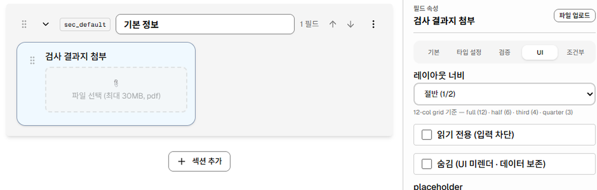
레이아웃 너비 — 전체 · 절반 (1/2) · 1/3 · 1/4 중에서 선택합니다.
캔버스의 첨부 영역이 함께 좁아집니다. 같은 줄의 남은 자리에 다른 필드가 배치됩니다.
12-col grid 기준 — 화면 안내와 같이 “full (12) · half (6) · third (4) · quarter (3)” 입니다.
유의사항
필수 확인 데이터 손상 · 폼 완료 불가
- • ⛔ 1/3 · 1/4 로 줄이지 마십시오. 첨부 영역 안내 문구가 길어 (“파일 선택 (최대 30MB, pdf)”) 잘려서 읽히지 않습니다. 줄여야 한다면 절반 까지만 사용하십시오.
- • 다중 업로드를 켠 필드는 폭을 줄이지 마십시오. 첨부한 파일이 목록으로 쌓이는데 폭이 좁으면 파일 이름이 잘려 무엇을 올렸는지 확인할 수 없습니다. 3.3
오해하기 쉬운 동작
- • 전체 폭을 권합니다. 첨부 영역은 원래 자리를 많이 쓰는 요소입니다.
참고
- • 지정하지 않으면 전체 폭이 적용됩니다.
5.3읽기 전용 · 숨김
개요
필드를 보여 주되 바꾸지 못하게 하거나, 화면에서 감추되 첨부된 파일은 보존하는 설정입니다. 둘 다 이미 올라간 파일을 삭제하지 않습니다.
화면 설명
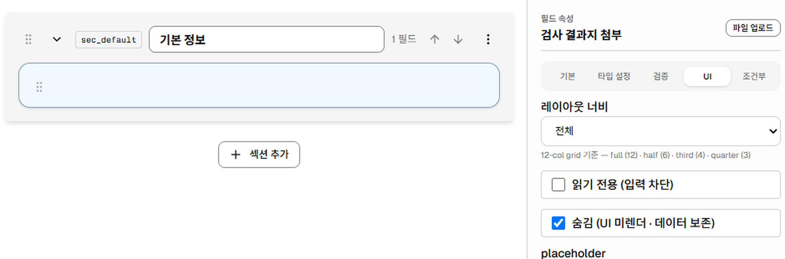
읽기 전용 (입력 차단) — 선택하면 첨부된 파일을 볼 수는 있지만 새로 올리거나 지울 수 없습니다.
숨김 (UI 미렌더 · 데이터 보존) — 선택하면 입력 화면에서 이 필드가 표시되지 않습니다.
캔버스 카드가 빈 테두리만 남습니다. 표시명도 첨부 영역도 표시되지 않습니다.
레이아웃 너비 — 5.2 에서 설정한 값입니다.
유의사항
필수 확인 데이터 손상 · 폼 완료 불가
- • ⛔ 숨김은 첨부된 파일을 지우지 않습니다. 이미 올라간 파일은 보관소에 그대로 남아 추출과 감사 추적에 포함됩니다. 잘못 올린 파일을 감추려고 숨김을 쓰면 파일은 그대로 남은 채 화면에서만 사라집니다 — 삭제는 입력 화면에서 하십시오.
- • ⛔ 개인정보가 담긴 파일을 숨김으로 처리하지 마십시오. 식별정보가 인쇄된 결과지를 잘못 올렸다면 숨기는 것이 아니라 파일을 삭제해야 합니다. 1.1
오해하기 쉬운 동작
- • 읽기 전용은 제출이 끝난 자료에 사용하십시오. 더 이상 바뀌어서는 안 되는 첨부를 고정할 때 적합합니다.
- • 조건에 따라 감추려면 조건부 표시를 사용하십시오. 이 탭의 숨김은 언제나 감추는 설정입니다. 6장
5.4helpText (도움말)
개요
기록자가 무엇을 어떻게 첨부해야 하는지 알려 주는 문구를 적는 자리입니다. 파일 업로드는 형식 · 크기 · 개수 제한이 서로 다른 탭에 흩어져 있어, 기록자 입장에서 한 번에 알 수 있는 곳이 이 문구뿐입니다. 같은 탭의 placeholder 는 이 타입에서 적용되지 않습니다.
화면 설명
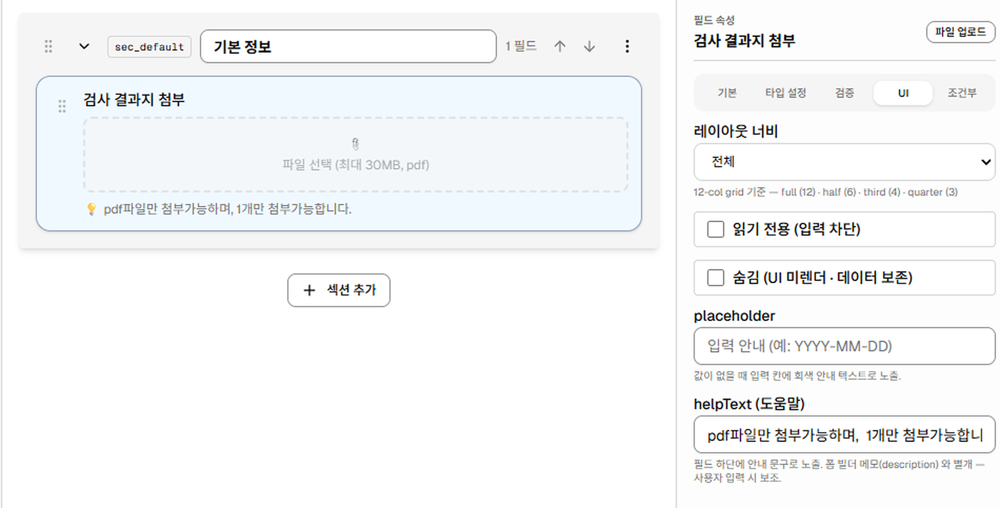
helpText (도움말) — 첨부 영역 아래에 표시할 안내 문구를 입력합니다.
첨부 영역 아래에 💡 아이콘과 함께 표시됩니다. 캡처는 “pdf파일만 첨부가능하며, 1개만 첨부가능합니다.” 입니다.
placeholder — 이 타입에서는 적용되지 않습니다. 입력해도 화면에 나타나지 않으며 오류도 표시되지 않습니다. 5.1
타입 배지 「파일 업로드」
유의사항
필수 확인 데이터 손상 · 폼 완료 불가
- • ⛔ placeholder 에 안내를 적지 마십시오. 이 타입에서는 화면에 나타나지 않아 적어 둔 내용이 조용히 사라집니다.
- • ⛔ 식별정보를 가리고 첨부하도록 반드시 적으십시오. 이름 · 등록번호가 인쇄된 자료가 그대로 올라오는 것을 막는 유일한 수단이 이 안내입니다. 1.1
- • 제한을 사람 말로 다시 적어 두십시오. 캡처처럼 형식 · 개수를 함께 적으면 기록자가 첨부 전에 확인할 수 있습니다. 제한을 바꾸면 이 문구도 함께 고쳐야 합니다. 3.2 · 3.3
오해하기 쉬운 동작
- • description 과 helpText 는 서로 다른 항목입니다. 화면 안내와 같이 helpText 는 “폼 빌더 메모(description)와 별개 — 사용자 입력 시 보조” 입니다. 2.1
조건부 탭 — 다른 값에 따라 표시하기
- 6.1조건부 표시 활성
- 6.2조건 설정
6.1조건부 표시 활성
개요
다른 필드의 값에 따라 이 필드를 표시하거나 감추는 기능입니다. 파일 업로드와 특히 잘 맞는 기능입니다 — 해당하지 않는 피험자에게 첨부 영역을 아예 보여 주지 않으면 불필요한 자료가 올라오는 일을 막을 수 있습니다.
화면 설명
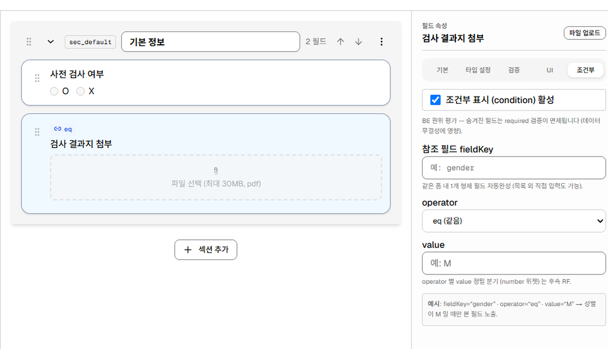
조건부 표시 (condition) 활성 — 선택하면 아래 조건 설정이 표시됩니다.
캔버스 필드 위에 🔗 eq 배지가 표시되어 조건이 적용되었음을 알립니다.
참조 필드 fieldKey — 조건의 기준이 되는 같은 폼 안의 다른 필드입니다. 같은 폼의 형제 필드가 자동완성되며, 목록에 없는 값은 직접 입력할 수도 있습니다.
operator — 비교 방법입니다. 기본값은 eq (같음) 입니다.
value — 비교할 값입니다. 참조 필드의 저장값을 입력합니다. 6.2
⚠ 화면 안내 — “숨겨진 필드는 required 검증이 면제됩니다 (데이터 무결성에 영향).” 조건 판정은 시스템이 수행합니다.
하단 예시 — fieldKey="gender" · operator="eq" · value="M" → 성별이 M 일 때만 본 필드 노출.
유의사항
필수 확인 데이터 손상 · 폼 완료 불가
- • ⛔ 조건을 설정하면 필수 검증이 면제됩니다. 조건이 맞지 않아 숨겨진 동안에는 그 필드가 필수여도 첨부 없이 폼이 완료됩니다. 그래서 조건이 잘못되면 오류 없이 자료가 누락됩니다.
- • ⛔ 이미 첨부한 뒤에 조건이 거짓이 되면 첨부 영역이 화면에서 사라집니다. 파일 자체는 보관소에 남지만 기록자는 보거나 지울 수 없게 됩니다 — 기준이 되는 필드를 나중에 바꿀 때 특히 주의하십시오.
오해하기 쉬운 동작
- • 검증 규칙4.3보다 조건부 표시를 먼저 검토하십시오. 해당하지 않는 사람에게 아예 묻지 않으면 잘못 첨부할 일도 없습니다.
참고
- • 조건을 활성화하고 참조 필드를 공란으로 두면 조건이 성립하지 않습니다. 반드시 ②~④를 모두 입력하십시오. 6.2
6.2조건 설정
개요
6.1 에서 활성화한 조건을 끝까지 입력한 상태입니다. 이 설정이면 「사전 검사 여부」 필드의 값이 1 일 때만 첨부 영역이 입력 화면에 표시됩니다. 참조 필드가 단일 선택이라 저장값이 문자열이고, value 칸에 그 값을 그대로 적어 조건이 정상 동작합니다.
화면 설명
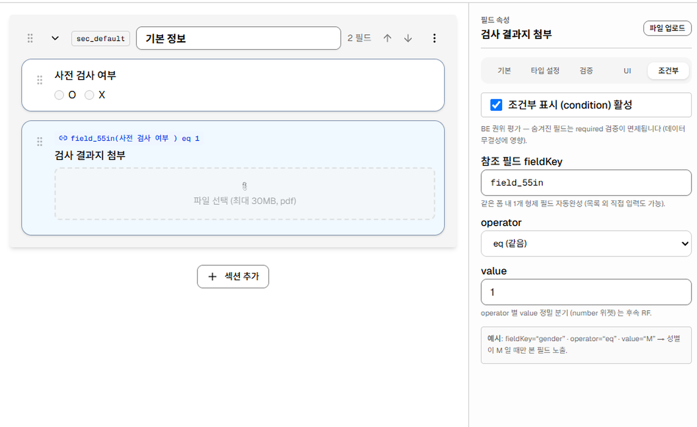
사전 검사 여부 가 1 일 때만 표시되도록 설정한 상태참조 필드 fieldKey = field_55in — 같은 폼의 「사전 검사 여부」 필드를 가리킵니다.
①~③을 모두 입력한 결과 — 캔버스 배지가 🔗 field_55in(사전 검사 여부) eq 1 로 구체화됩니다.
operator = eq (같음)
value = 1 — 화면에 보이는 O 가 아니라 그 선택지의 저장값을 입력합니다.
⚠ 화면 안내 — “숨겨진 필드는 required 검증이 면제됩니다 (데이터 무결성에 영향).”
하단 예시 — fieldKey="gender" · operator="eq" · value="M" → 성별이 M 일 때만 본 필드 노출.
유의사항
필수 확인 데이터 손상 · 폼 완료 불가
- • ⛔ value 에는 화면 문구가 아니라 저장값을 입력합니다.
O라고 적으면 조건이 성립하지 않아 첨부 영역이 끝까지 표시되지 않습니다. 참조할 필드의 선택지 목록에서 저장값을 먼저 확인하십시오. - • ⛔ 참조 필드의 저장값을 바꾸면 조건이 조용히 깨집니다. 예를 들어 저장값을
1에서Y로 바꾸면 이 조건은 오류 없이 그냥 성립하지 않게 됩니다 — 그래서 발행 후 저장값 변경이 위험합니다. - • 참조 필드의 fieldKey 를 변경하거나 삭제해도 조건이 깨집니다. 조건은 표시명이 아니라 fieldKey 로 연결됩니다. 2.1
오해하기 쉬운 동작
- • 설정한 뒤 미리보기로 확인하십시오. 기준 값을 바꿔 가며 첨부 영역이 실제로 나타나고 사라지는지 확인해야 합니다.
부록
- 7.1탭별 설정 항목 한눈에 보기
- 7.2반드시 기억할 것 · 다루지 않은 것
7.1탭별 설정 항목 한눈에 보기
탭별 설정 항목
| 탭 | 항목 | 무엇을 정하는가 | 본문 |
|---|---|---|---|
| 기본 | fieldKey | 값이 저장되는 실제 키 (저장 후 변경 금지) | 2.1 |
| label (표시명) | 화면에 표시되는 항목 이름 | 2.1 | |
| description (도움말) | 첨부 영역 아래 보조 설명 — 무엇을 첨부할지 | 2.1 | |
| 필수 입력 | 파일이 하나라도 있어야 하는지 (미측정 선언이 없다) | 2.2 | |
| SDV 검증 대상 | CRA 원자료 대조 대상인지 · 검증 필수 여부 | 2.3 | |
| AE 의미 역할 | 이 타입은 지정 대상이 아니다 — 예/아니오 · 단일 선택용 | 1.1 | |
| 타입 설정 | allowedTypes | 허용 확장자 (콤마 구분 · 생성 시 pdf, png, jpg) | 3.1 · 3.2 |
| maxSizeMB | 파일 한 개의 최대 크기 (1~50 정수 · 생성 시 10) | 3.1 · 3.2 | |
| 다중 업로드 (multiple) | 여러 개 첨부 허용 — 끄면 새 파일이 기존 파일을 교체 | 3.3 | |
| 검증 | ruleType | 규칙 종류 — 이 타입에서 쓸 수 있는 것은 다른 필드와 비교 뿐 | 4.2 · 4.3 |
| 비교할 항목 · operator · 비교 대상 | 같은 폼의 다른 필드와 견주는 조건 (저장값으로 비교) | 4.3 | |
| message | 위반 시 사용자에게 표시할 문구 | 4.3 | |
| 위반 시 · 활성 | 다른 필드와 비교는 저장 차단 고정 · 규칙 활성 · 비활성 | 4.3 | |
| UI | 레이아웃 너비 | 12-col grid 상의 폭 (절반까지만 · 다중이면 전체) | 5.2 |
| 읽기 전용 | 첨부된 파일을 보여 주되 올리거나 지우지 못하게 | 5.3 | |
| 숨김 | 화면 미표시 (첨부 파일은 보관소에 그대로 남는다) | 5.3 | |
| helpText | 첨부 방법 안내 (placeholder 는 이 타입에서 미적용) | 5.4 | |
| 조건부 | 조건 활성 | 조건부 표시 사용 여부 (필수 검증 면제) | 6.1 |
| 참조 필드 fieldKey | 조건의 기준이 되는 같은 폼의 필드 | 6.2 | |
| operator · value | 비교 방법과 비교할 값 (저장값을 입력) | 6.2 |
다른 타입과 다른 점
| 항목 | 다른 타입 | 파일 업로드 |
|---|---|---|
| 타입 설정 초기 상태 | 빈 칸에서 시작 | 기본 제약이 값으로 들어가 있다 3.1 |
| 미측정 선언 허용 | 기본 탭에 항목 있음 | 항목 자체가 없다 2.2 · 7.2 |
| 기본값 (defaultValue) | 타입 설정 탭에 있음 | 없다 — 파일은 미리 채울 수 없다 3.1 |
| placeholder | 입력란 안내로 표시 | 적용되지 않는다 — 안내는 시스템이 조립 5.4 |
7.2반드시 기억할 것 · 다루지 않은 것
반드시 기억할 것
필수 확인 데이터 손상 · 폼 완료 불가
- • 파일 안의 피험자 식별정보를 가리고 첨부하게 하십시오. 시스템은 파일 내용을 검사하지 않습니다 — 막을 수 있는 유일한 수단은 도움말과 helpText 의 안내입니다. 1.1 · 2.1 · 5.4
- • 생성 직후의
pdf, png, jpg·10MB는 이미 적용된 제약입니다. 예시가 아니므로 과제에 맞는지 반드시 확인하십시오. 3.1 - • 다중 업로드를 끄면 새 파일이 기존 파일을 교체합니다. 여러 장을 받아야 한다면 반드시 켜 두십시오. 3.3
- • 발행 후 제한을 좁혀도 이미 올라간 파일은 남습니다. 새 첨부만 막힐 뿐이며 경고도 표시되지 않습니다. 3.2
- • 숨김은 첨부된 파일을 지우지 않습니다. 잘못 올린 파일은 숨기는 것이 아니라 입력 화면에서 삭제해야 합니다. 5.3
- • 이 타입에는 “미측정” 을 선언할 방법이 없습니다. 원본을 끝내 구하지 못할 수 있다면 필수로 지정하지 말고 사유를 적을 텍스트 필드를 함께 두십시오. 2.2
오해하기 쉬운 동작
- • 저장되는 것은 첨부한 파일의 목록입니다. 파일 실체는 별도 보관소에 무결성 검사와 함께 보관됩니다. 1.1
- • 형식 · 크기는 검증 탭이 아니라 타입 설정 탭이 담당합니다. 「값 범위」 는 파일 개수도 크기도 검사하지 않습니다. 3.2 · 4.2
- • 크기 상한은 파일 한 개 기준이며 50MB 를 넘을 수 없습니다. 3.2
참고
- • 같은 관계라면 검증 규칙보다 조건부 표시가 먼저입니다 — 묻지 않으면 잘못 첨부할 일도 없습니다. 4.3 · 6.1
이 문서에서 다루지 않은 것
※ 미측정 선언 허용 — 기본 탭에 항목이 표시되지 않습니다. 시스템이 이 타입의 미측정 선언을 지원하지 않기 때문이며, 캡처가 빠진 것이 아닙니다. 첨부가 없으면 그냥 비어 있는 것으로 기록됩니다. 2.2
placeholder — UI 탭에 항목이 표시되지만 이 타입에서는 적용되지 않습니다. 첨부 영역의 안내 문구는 타입 설정 탭의 값으로 시스템이 조립합니다. 안내는 helpText 에 적으십시오. 5.1 · 5.4
기본값 (defaultValue) · 자동 계산 (calculation) — 타입 설정 탭에 항목이 없습니다. 파일은 미리 채워 두거나 수식으로 만들어 낼 수 없습니다. 3.1
AE 의미 역할 — 기본 탭에 항목은 있으나 이 타입은 지정 대상이 아닙니다. 예/아니오 또는 단일 선택 필드에 지정하십시오. 1.1
파일을 올리고 지우는 화면 — 이 문서는 폼을 저작하는 쪽만 다룹니다. 기록자가 실제로 첨부 · 삭제 · 내려받는 절차는 입력 화면 매뉴얼을 참조하십시오.
최대 첨부 개수 제한 — 지정할 수 있는 항목이 없습니다. 필요한 장수는 도움말과 helpText 로 안내하십시오. 3.3